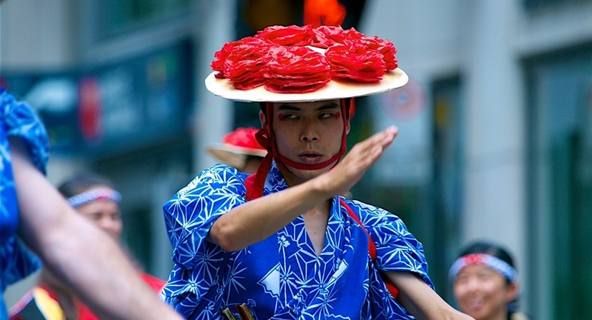
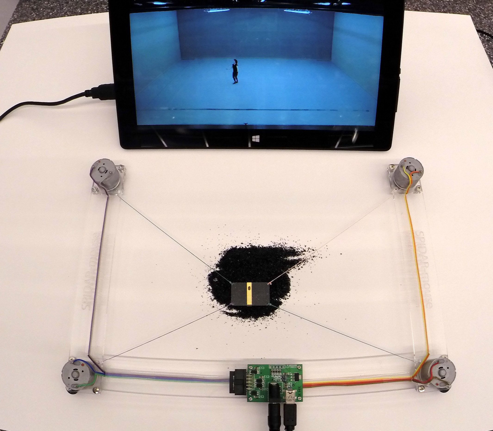

タンジブル・コリオグラフィ
Photo: Pham T. Q.
ブログ
-
{% assign posts=site.posts | where:"lang", page.lang %}
{% for post in posts limit:5 %}
-
{{ post.title }}
{% endfor %}
はじめに
こんにちは、稗田直人です。日本からカナダ・モントリオールに移住して四年間、エンジニア兼メディアアーティストとして日本やカナダをはじめとして数々のメディア・インスタレーションの開発・展示に関わってきました。
今回私は、メディア・アートやタンジブル・インターフェースといった技術にコンテンポラリー・ダンスの思想を取り入れた、「タンジブル・コリオグラフィ」を提案いたします。コンテンポラリー・ダンスのコリオグラフィ（振り付け）は体の動きだけのものではなく、コリオグラファ（振付家）とダンサーと観客の関係だったり、体の細胞を意識することなど、単純な体の動きにとどまらない前衛的なアイデアであふれています。
「タンジブル・コリオグラフィ」はそういった思想を理解し、脳波インターフェースやバーチャル・リアリティ、触覚デバイスといった最先端の技術を駆使してコンテンポラリー・ダンスのアイデアを具現化することを目的としています。
Photo: Naoto Hieda
ロードマップ
- フェーズ 1: コリオグラフィック・コーディング・ラボ (ニューヨーク, 2015)
- フェーズ 2: danceWeb（ダンスウェブ） (ウィーン, 2016)
- フェーズ 3: パフォーマンス (ウィーン、モントリオール、東京など, 2016-2017)
「タンジブル・コリオグラフィ」の目的は、これから2年間のうちにコリオグラファやダンサー、アーティスト、研究者たちとコラボレーションをしながら作品製作をすることです。2015年にコリオグラフィック・コーディング・ラボで実験的な作品「セリュラー・ボディ」を発表し、また2016年にはウィーンで開催されるダンスウェブという一か月間のレジデンス・ワークショップに、千人超の応募者のうち66人の合格者の一人として参加することになりました。ワークショップでティノ・セーガル氏など第一線で活躍されている方々からコンテンポラリー・ダンスを学べること、そして同じ世代の今後活躍が期待されるダンサー、コリオグラファの人たちとネットワークを作れることは、自分がコンテンポラリー・ダンスとメディア・アートを大学などで本格的に研究していくための第一歩になります。
そして、ＣＣＬとダンスウェブで学んだことの成果発表としていくつかのパフォーマンスを予定しています。ウィーン、東京、そして私の拠点のモントリオールの他、ライブ・ストリーミングを用いることでパフォーマーと観客の物理的な場所にとらわれない方法についても模索していきます。
パフォーマンスに向けて、すでにダンサーやミュージシャンとのコラボレーションを進めています。LAND PROJECTとは遠隔地でのコリオグラフィやパフォーマンスについて、DJ Miniとは触覚や音楽のテレプレゼンスについて、そして稗田隼人（ギタリスト・作曲家）とは即興演奏と機械学習についてのパフォーマンスを予定しています。

Photo: Motionbank
募金
2.92万円 / 42万円締め切り: 六月一日
「タンジブル・コリオグラフィ」の第一段階として、ダンスウェブに参加するためにこの度は寄付金を募ることいたしました。ダンスウェブの経費は、参加費用27万円、航空券8万円、その他食事代等7万円、あわせて42万円と見積もっています。参加費用は六月一日までに支払わなければなりません。食事も含めてすべての経費は こちらに公開いたします。また、ダンスウェブの開催期間は寄付いただいた方全員にレポートをお送りいたします。また、8,300円以上の寄付をいただいた方々にはお礼に折り紙をお送りするほか（送料別）、今後予定している体験型のパフォーマンスにご招待いたします。
ワークショップへの参加は自分のキャリアのためになるだけでなく、参加したおりにはその経験をいかしてコンテンポラリー・ダンスとテクノロジーの研究分野の発展に尽くしていくことをお約束します。なお、金額はすべてカナダドルから換算しています。
日本からの寄付は銀行振込のみ受け付けております。詳細についてはメールでお問い合わせください。
FAQ
- Q: 期限までに目標額を達成できなかった場合は返金されますか。
- A: いいえ。その場合は自分自身で経費を支払います。
- Q: ダンスウェブは奨学金制度だと聞きました。なぜ募金が必要なのですか。
- A: ワークショップ参加費のうち、ダンスウェブと欧州委員会が三分の二を支援しますが参加者が残りの金額とその他経費を負担しなければなりません。調べた結果、日本及びカナダで私が申し込める財団は見つかりませんでした。
- Q: 税金の控除の対象にはなりますか。
- A: いいえ。ただし領収書が必要な場合などはメールでご連絡ください。
- Q: なぜキックスターターなどのクラウドファンディングのサービスを使わないのですか。
- A: クラウドファンディングは通常手数料がかかります（キックスターターの場合は五パーセント）。そのため手数料が若干安いペイパルを使うことで最大限に寄付金を利用できるようにしました。